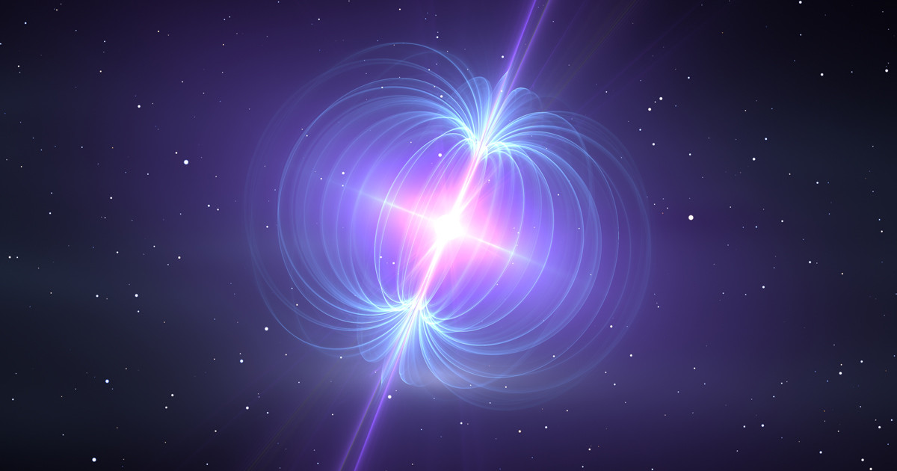
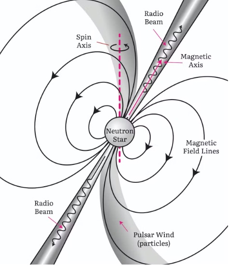
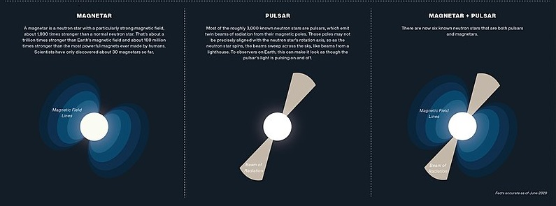

A new star is emitting unusal radio signals unlike any star so far found in this region of the Milky
Way. It is an anomaly. It is a neutron star which comes from a massive star whose core collapsed.
This leads astonomers to question what else is out there, and if larger undetected poplulations are "waiting
to be discovered."
The MeerTRAP team discovered this star in the Milky Way about 1,300 light years away from Earth in the
Vela-X 1 region.
They were intrigued by this star that did not last 20-30 milliseconds. They searched older data from the
region.

This new star resides in the neutron star
“graveyard”. This is a
region of space where we don’t expect to detect any radio emissions at all, since it’s theorised the neutron
stars here are at the end of their life cycle and therefore not active (or less active).
This new star resides in the neutron star “graveyard”. This is a region of space where we don’t expect to detect
any radio emissions at all, since it’s theorised the neutron stars here are at the end of their life cycle and
therefore not active (or less active).

Neutron stars are the collapsed cores of massive stars. Those that emit beams of electromagnetic radiation
are classified as pulsars.
Interesting Fact: the longest known rotation period for a pulsar before this new star was 23.5 seconds.
Different Types of Neutron Stars
Magnetar
Pulsar
Magnetar+Pulsar

A magnetar is a type of neutron star with an extremely powerful magnetic field. The
magnetic-field decay powers the emission of high-energy electromagnetic radiation, particularly
X-rays and gamma rays
A pulsar is a highly magnetized rotating neutron star that emits beams of
electromagnetic radiation out of its magnetic poles. This radiation can be observed only when a beam
of emission is pointing toward Earth, and is responsible for the pulsed appearance of emission
Pulsars and magnetars are both types of neutron stars. They are leftover after
supernovae events and the cores of these massive stars.